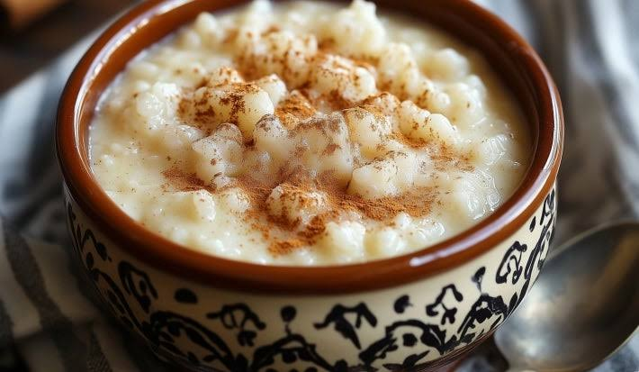

O arroz doce é uma das sobremesas mais tradicionais de Portugal.
Não há festa de família sem uma travessa decorada com canela.
200 g de arroz carolino
500 ml de água
1 litro de leite
250 g de açúcar
4 gemas de ovo
Casca de 1 limão
1 pau de canela
1 pitada de sal
Canela em pó para decorar
Coza o arroz na água com o sal, a casca de limão e o pau de canela, até a água quase desaparecer.
Junte o leite quente aos poucos, sempre a mexer, em lume brando, durante cerca de 30 minutos.
Junte o açúcar e mexa até dissolver. Retire do lume e tire a casca de limão e o pau de canela.
Deite numa travessa, deixe arrefecer e decore com canela em pó.
Dicas
Use arroz carolino: fica muito mais cremoso. IMPORTANTE: depois de juntar as gemas, não deixe ferver, senão as gemas talham. Fica ainda melhor no dia seguinte.